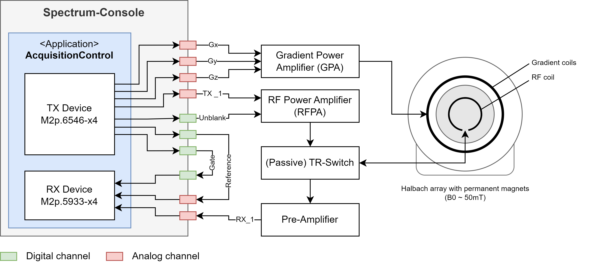

System Setup#
This console application was developed within the scope of a low-field MRI system. The core components of the console are two measurement cards from Spectrum-Instrumentation which are installed via the PCI express slots of the console computer. The arbitrary waveform generator (AWG) or transmit (TX) card replays the pulse sequence as an analog waveform. The digitizer card or receive (RX) card samples the analog MRI signal and converts it to a digital signal.
Spectrum Instrumentation Arbitrary Waveform Generator (AWG) card M2p.6546-x4
Spectrum Instrumentation Digitizer card M2p.5933-x4
To run an MRI system, a homogeneous static magnetic field is required. The setup is console is developed with is build of a permanent magnets in Halbach configuration providing a static magnetic field of about 50 mT. It is equipped with three gradient coils for spatial encoding and a solenoid volume coil. The gradient waveforms are generated by the Tx card and amplified by a gradient power amplifier (GPA) to drive the gradient coils. The RF coil is connected to a passive TR switch which switches between transmit and receive mode. The replayed analog signal is amplified by an RF power amplifier (RFPA) and send to the coil. In receive mode, the MR signal is pre-amplified and digitized by the RX card.
The sampling of the MR signal is controlled by a digital gate signal. To only amplify the transmit line in case of an RX pulse event, a digital un-blanking signal is used to open the RFPA. To ensure phase coherence, the transmit card clock is used as the master clock which is feed into the receive card. In addition a digital reference signal is transferred during the ADC window.
Figure 1: Low-field MRI system overview